I take overlapping photos, recover homographies from hand-clicked correspondences, warp images with inverse warping (nearest neighbor and bilinear), rectify flat objects, and blend photos into mosaics. I also do the cylindrical-projection extension.
I shot three sets that overlap by roughly 40–60%, plus two flat rectangular objects for rectification. All photos were taken handheld with a phone, so the camera center moved a little between shots (more on that later).
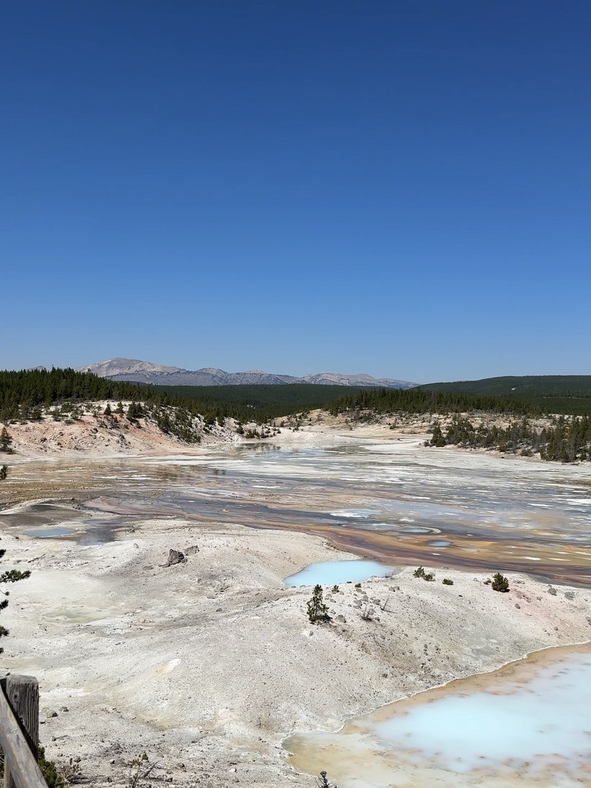
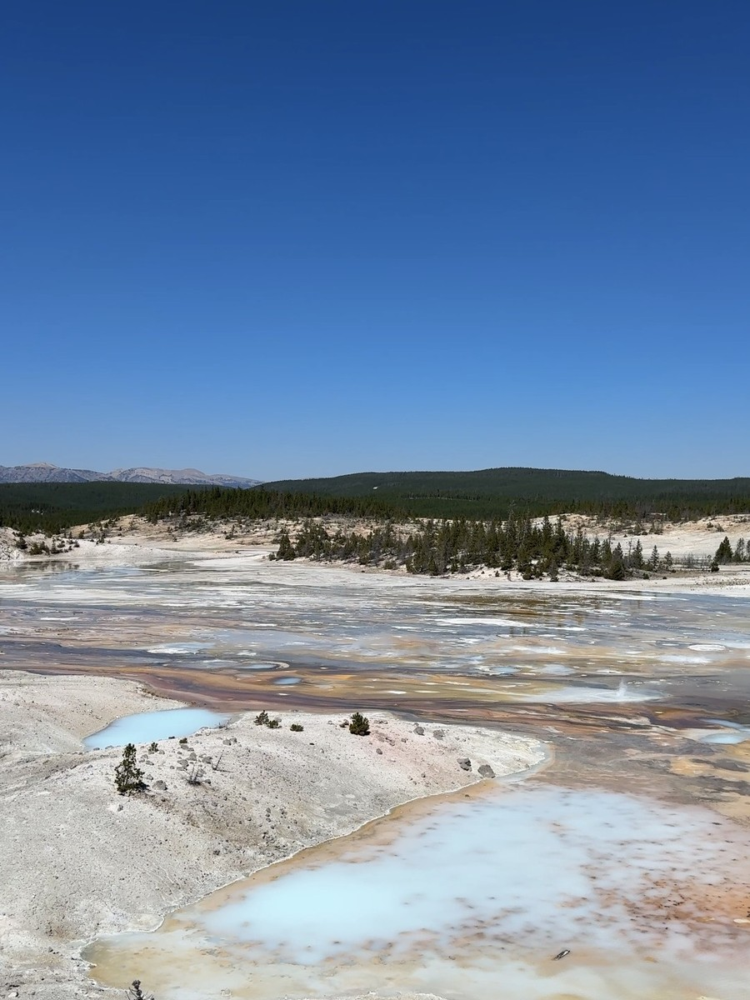
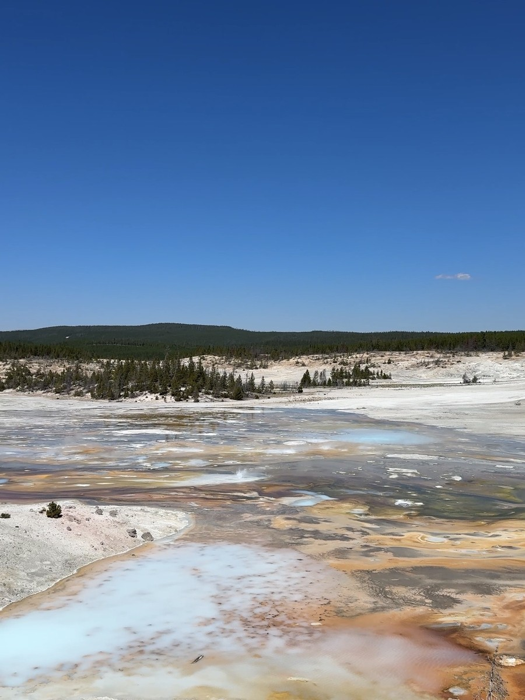
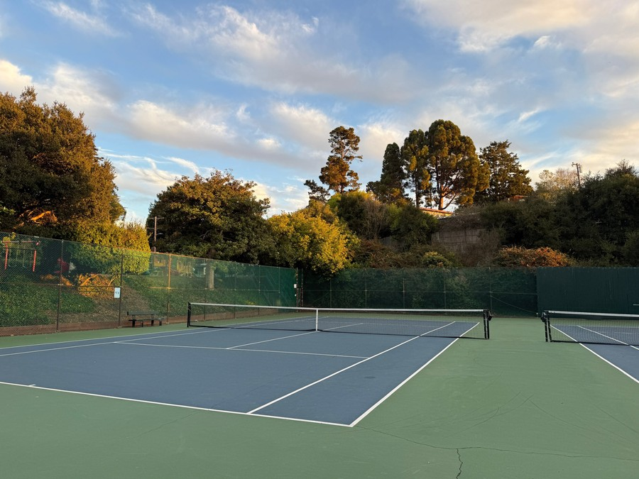
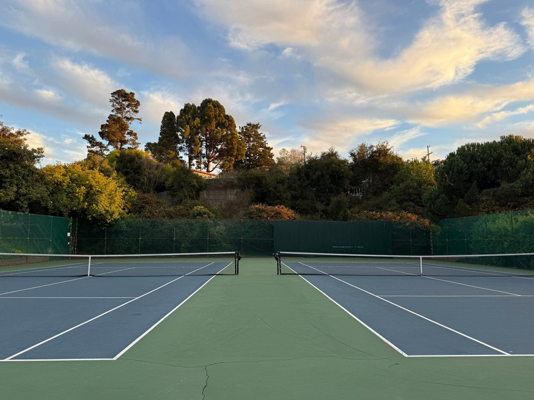
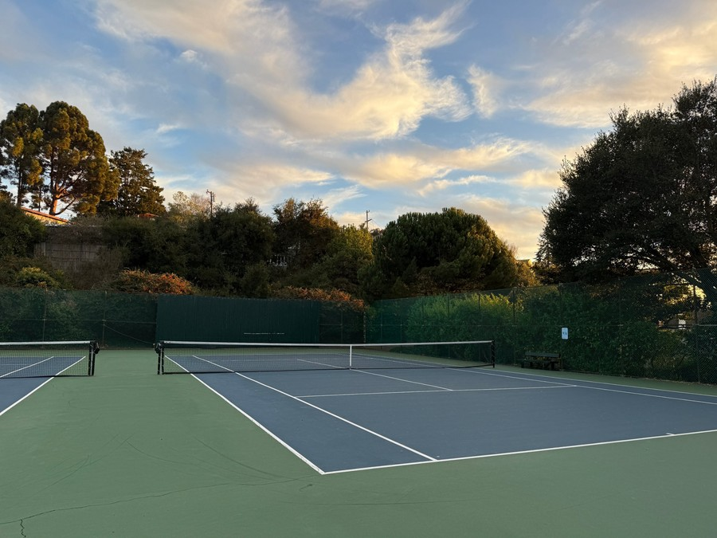
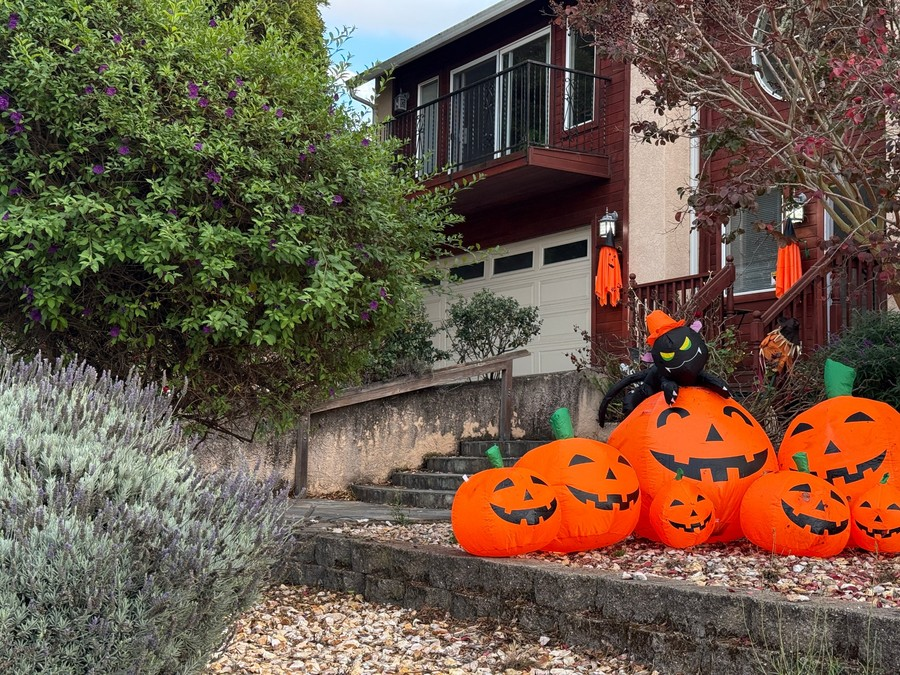
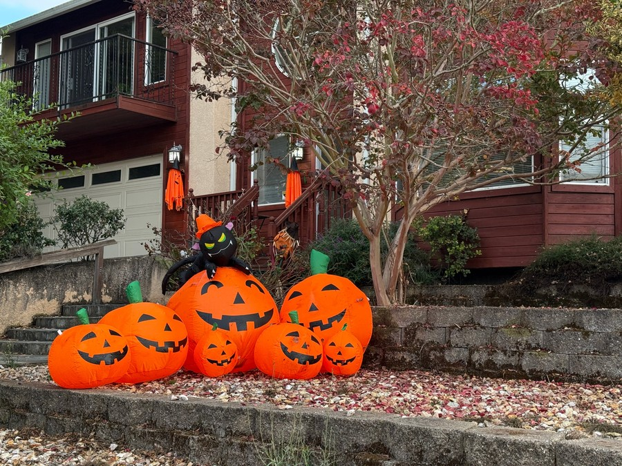
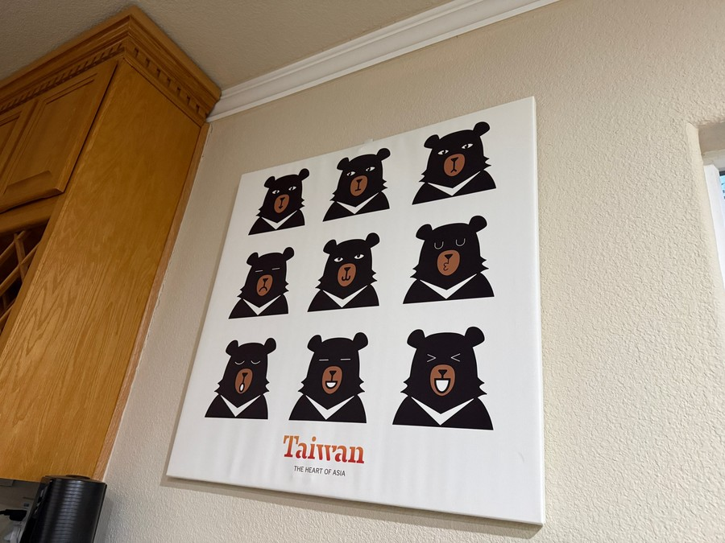
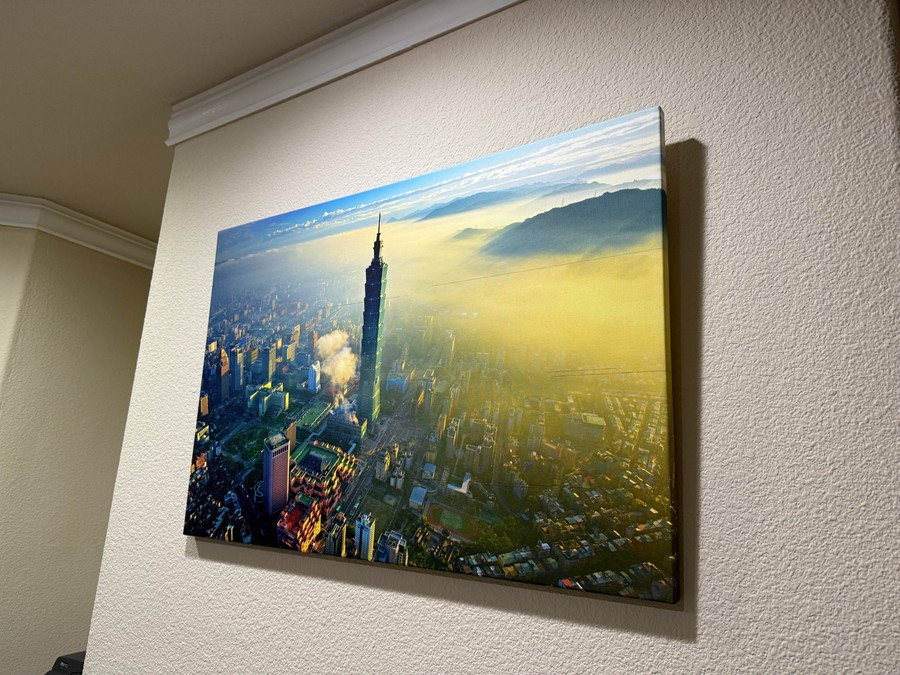
For the mosaics, the best shots come from rotating the camera in place instead of walking sideways, because then a homography describes the pair exactly. Yellowstone has a lot of empty blue sky and moving steam, so the useful features are on the ground and the tree line. For the rectification photos I picked objects that are rectangles in real life, so I know what the answer should look like.
A homography H maps a point (x, y) in one image to (x′, y′) in the other, with 8 degrees of freedom (the bottom-right entry is fixed to 1).
For one correspondence, x′ = (h₁x + h₂y + h₃) / (h₇x + h₈y + 1) and y′ = (h₄x + h₅y + h₆) / (h₇x + h₈y + 1). Multiplying out the denominator gives two equations that are linear in h₁…h₈:
h₁x + h₂y + h₃ − h₇·x·x′ − h₈·y·x′ = x′h₄x + h₅y + h₆ − h₇·x·y′ − h₈·y·y′ = y′
Each pair of points adds 2 rows to A (2n × 8) and 2 entries to b (2n). With exactly 4 pairs the system has a single solution. With more pairs it is over-determined, so I solve it with least squares (np.linalg.lstsq), which spreads small clicking errors over all the points instead of letting one bad point decide everything.
def build_system(im1_pts, im2_pts):
A, b = [], []
for (x, y), (xp, yp) in zip(im1_pts, im2_pts):
A.append([x, y, 1, 0, 0, 0, -x * xp, -y * xp]); b.append(xp)
A.append([0, 0, 0, x, y, 1, -x * yp, -y * yp]); b.append(yp)
return np.array(A), np.array(b)
def computeH(im1_pts, im2_pts):
A, b = build_system(im1_pts, im2_pts)
h, *_ = np.linalg.lstsq(A, b, rcond=None)
return np.append(h, 1.0).reshape(3, 3)The four clicked corners (TL, TR, BR, BL) of the poster, mapped to the corners of an 800×800 square. Here n = 4, so the 8×8 system is solved exactly and the reprojection error is 0 px.
A (8x8):
[[ 400.433 292.438 1. 0. 0. 0. -0. -0. ]
[ 0. 0. 0. 400.433 292.438 1. -0. -0. ]
[ 883.307 159.484 1. 0. 0. 0. -705762.148 -127427.529]
[ 0. 0. 0. 883.307 159.484 1. -0. -0. ]
[ 897.187 868.818 1. 0. 0. 0. -716852.164 -694185.727]
[ 0. 0. 0. 897.187 868.818 1. -716852.164 -694185.727]
[ 275.515 787.731 1. 0. 0. 0. -0. -0. ]
[ 0. 0. 0. 275.515 787.731 1. -220136.174 -629396.685]]
b = [0, 0, 799, 0, 799, 799, 0, 799]
H = [[ 6.956 1.754 -3298.27 ]
[ 1.724 6.263 -2521.986]
[ 0.003 0.002 1. ]]Same idea, but the target is a 900×600 rectangle because the canvas is 3:2.
b = [0, 0, 899, 0, 899, 599, 0, 599]
H = [[ 4.847 0.575 -1595.46 ]
[ 0.914 3.192 -1258.825]
[ 0.002 0.001 1. ]]
mean reprojection error: 0.000 pxFor every neighboring pair I clicked 10 point pairs by hand, only inside the overlap and spread over the whole overlap region (not all in one corner, otherwise H gets bad far away from the points). I chose corners or small distinctive things (a small tree, a rock, a net post, a window corner) and avoided things that move: clouds, steam, water ripples, and tree leaves in the wind. The reference image is the middle one for the 3-photo sets, so every other image is warped directly into its frame.
Ten point pairs per neighboring pair (20 equations, 8 unknowns, solved by least squares). The mean reprojection error is the average distance in pixels between H applied to my clicked point and the point I clicked in the reference image. The images are resized so the longest side is 1200 px, and the coordinates below are in that resized frame.
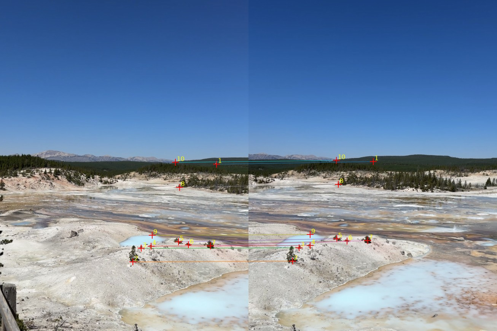
H (left -> middle) =
[[ 0.757 -0.006 349.74 ]
[-0.154 0.906 56.116]
[-0. -0. 1. ]]
mean reprojection error: 2.69 px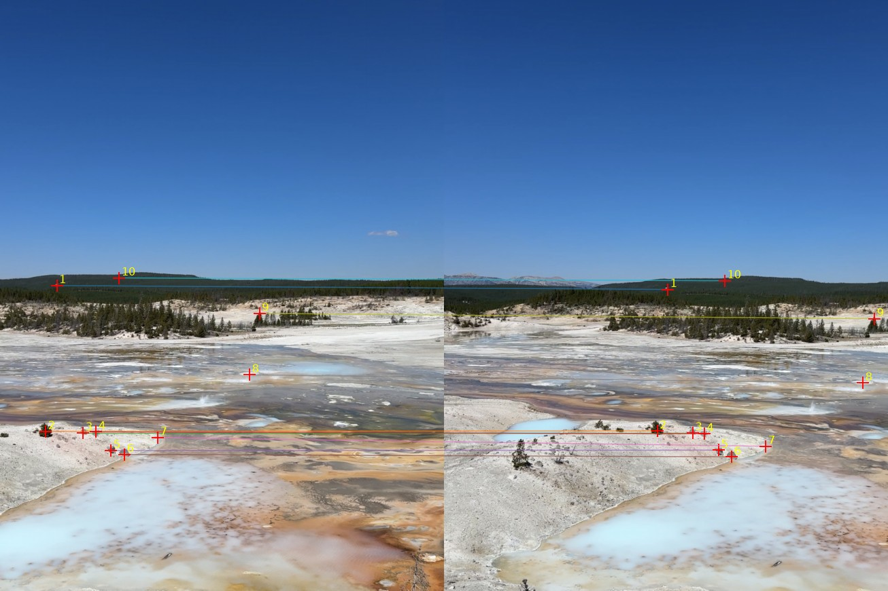
H (right -> middle) =
[[ 0.874 -0.063 -225.118]
[-0.03 0.784 101.486]
[ 0. -0. 1. ]]
mean reprojection error: 3.13 px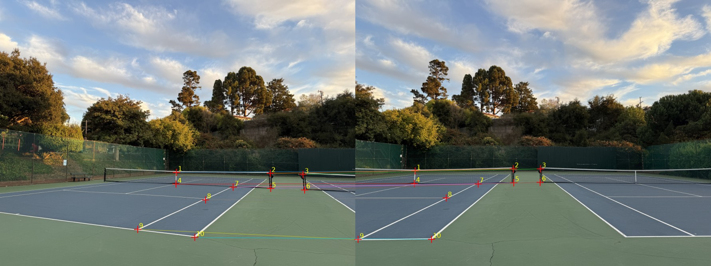
H (left -> middle) =
[[ 1.856 -0.155 -731.294]
[ 0.392 1.432 -262.819]
[ 0.001 -0. 1. ]]
mean reprojection error: 2.06 px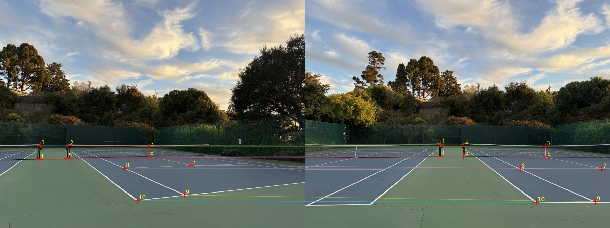
H (right -> middle) =
[[ 0.523 0.021 391.897]
[-0.208 0.756 119.79 ]
[-0. -0. 1. ]]
mean reprojection error: 1.81 px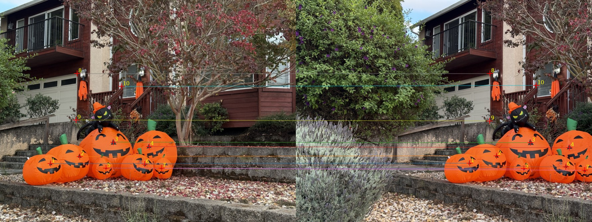
H (right -> left) =
[[ 0.768 0.1 471.294]
[-0.121 0.975 31.281]
[-0. 0. 1. ]]
mean reprojection error: 2.37 pxThe mean reprojection error is about 2–3 px for all five pairs. This is a mix of my clicking error (I clicked on a screen that is smaller than the photo) and the fact that a homography is not exact for scenes with depth. The Yellowstone right-to-middle pair has the largest error (3.1 px), probably because many of my points are on the small terrace in the lower part of the photo, so the far part of the picture is less constrained. In the tennis pairs the net posts, line intersections, and court corners were easy to click accurately, and that pair has the smallest error (1.8 px). The H for the tennis left photo has a large scale factor (1.86 in x), which explains why the left image gets so stretched in the planar mosaic.
I use inverse warping: for every pixel of the output, I look up where it came from in the source with H⁻¹ and sample there. This avoids the holes you get from forward warping.
def corner_bounds(shape, H): # output canvas = bounding box of the warped corners
h, w = shape[:2]
c = np.array([[0,0,1],[w-1,0,1],[w-1,h-1,1],[0,h-1,1]], float).T
p = H @ c; p = p[:2] / p[2]
return int(np.floor(p[0].min())), int(np.floor(p[1].min())), int(np.ceil(p[0].max())), int(np.ceil(p[1].max()))
def _source_coords(H, bounds): # for every output pixel, where is it in the source?
x0, y0, x1, y1 = bounds
xs, ys = np.meshgrid(np.arange(x0, x1 + 1), np.arange(y0, y1 + 1))
Q = np.linalg.inv(H) @ np.stack([xs.ravel(), ys.ravel(), np.ones(xs.size)])
return (Q[0] / Q[2]).reshape(xs.shape), (Q[1] / Q[2]).reshape(xs.shape)Nearest neighbor rounds the source coordinate (u, v) to the closest pixel. It is very simple and fast, but edges look jagged (stair steps). Bilinear takes the 4 neighboring pixels and mixes them with weights (1−a)(1−b), a(1−b), (1−a)b, ab, where a and b are the fractional parts of u and v. It is a little slower but the edges are smooth. Pixels whose source coordinate falls outside the image are marked invalid and become transparent (alpha = 0), which I need later for blending.
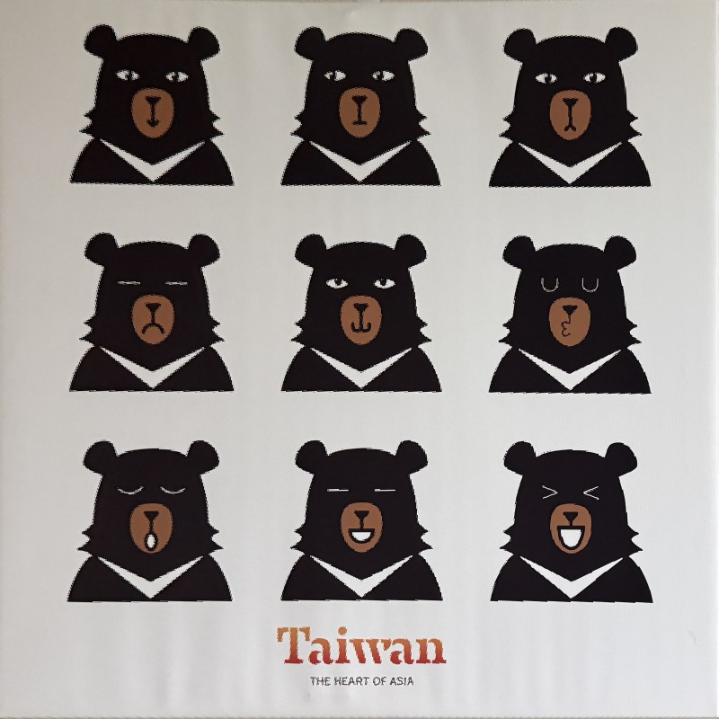
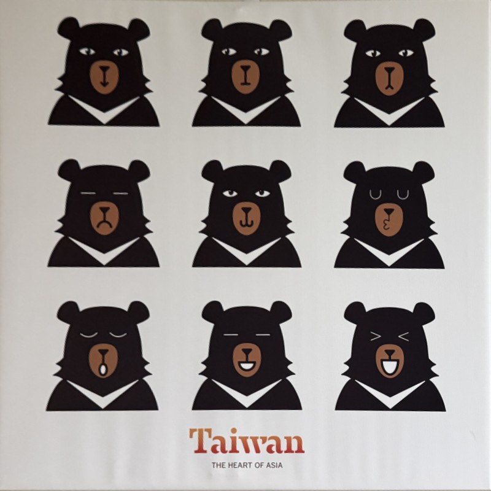
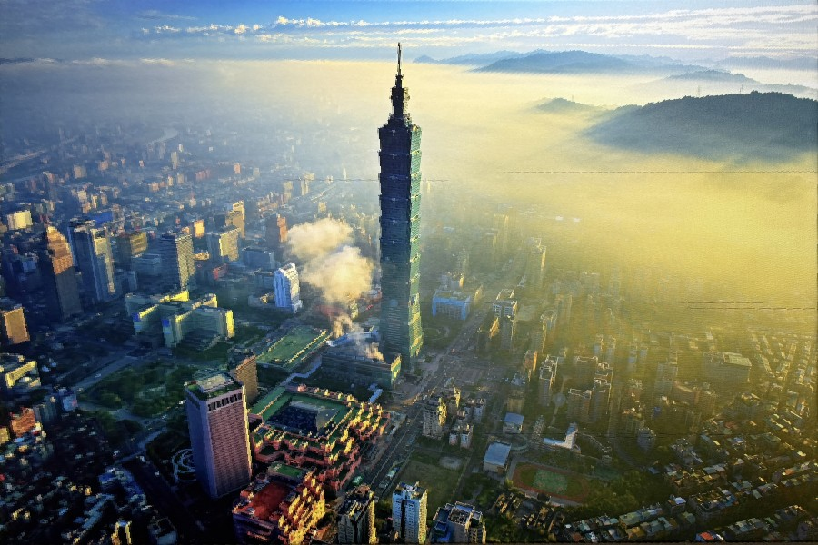
In both examples the canvas edges become straight and perpendicular, the 3×3 grid of bears lines up in straight rows and columns, and the text “Taiwan” is no longer slanted. This is a good sanity check for my homography because I know the object really is a rectangle. Comparing the two interpolations, nearest neighbor shows jagged edges around the bears and the letters (and the fine texture looks noisier), while bilinear is smoother. The canvas also has a small amount of lens distortion, which a homography cannot fix, so the picture is not perfectly straight at the very edges.
I warp every image into the middle (reference) image’s frame with its H, make a big canvas that fits all of them, and blend where they overlap. I tried two methods: feathering and a two-band (Laplacian-style) blend.
Feathering: every image gets a weight equal to the distance to its nearest border (so it is 0 at the edge and large in the middle), warped together with the image. The mosaic is the weighted average Σwᵢ·Iᵢ / Σwᵢ. It hides the exposure seam but averages misaligned things, so small misalignments show up as ghosts.
Two-band: I split each warped image into a low-frequency band (Gaussian blur, σ = 15) and a high-frequency band (image minus low). The low band is blended with the soft weights above (smooth transition over a long distance), and the high band is taken from the image with the larger weight at each pixel (hard transition, so details do not get averaged into ghosts). Then I add the two bands back.
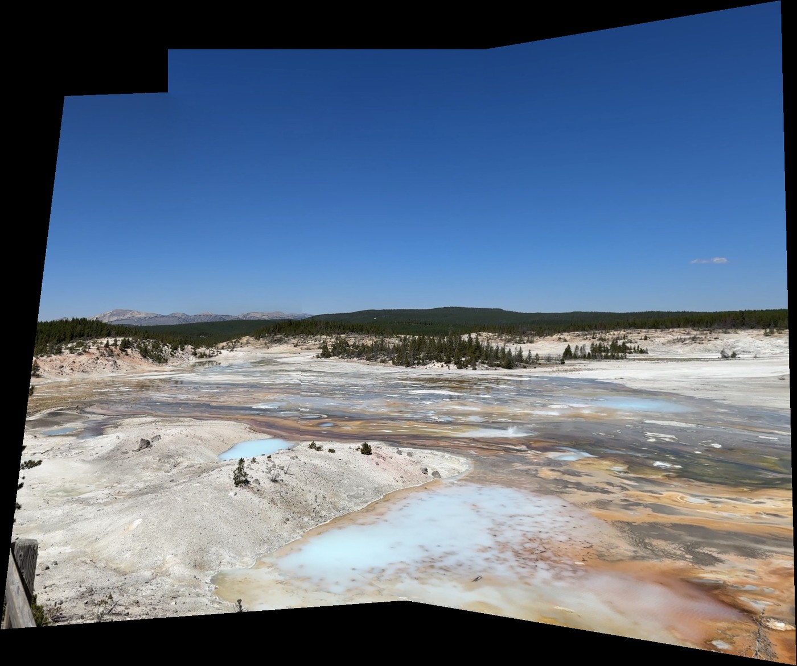
This is my favorite result: the white terraces, the colored water channels and the tree line all connect well. In the feathered version you can see a faint double mountain ridge in the distance (the far mountains are not on the same plane as the ground, and my hands moved a bit). The two-band version has sharper details, but there is a faint vertical line in the middle where the exposure changes slightly between photos. The steam and the water surface also moved between shots, so those small areas never match perfectly.
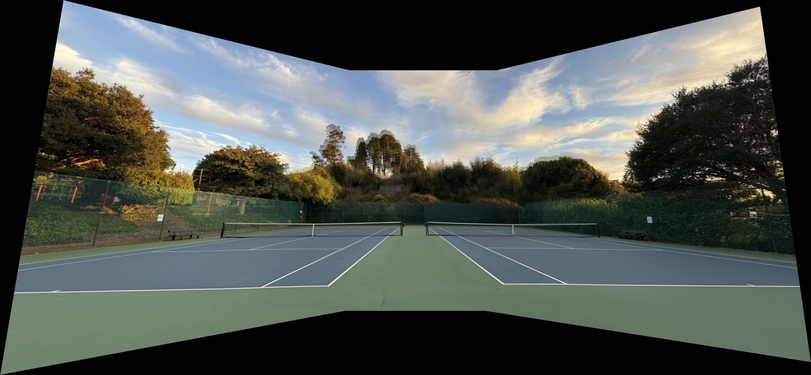
The court lines and the fences connect well. The shape of the mosaic looks like a bow-tie because the left and right photos are strongly stretched by H (the left-to-middle H stretches x by a factor of about 1.9). That is the normal behavior of a planar projective mosaic when the field of view gets wide. The feathered version has ghosted trees in the center top (the trees are far away and the leaves moved, and my camera center also moved, causing parallax). The two-band blend fixes most of this. The leftover seam in the sky is from slightly different exposure.
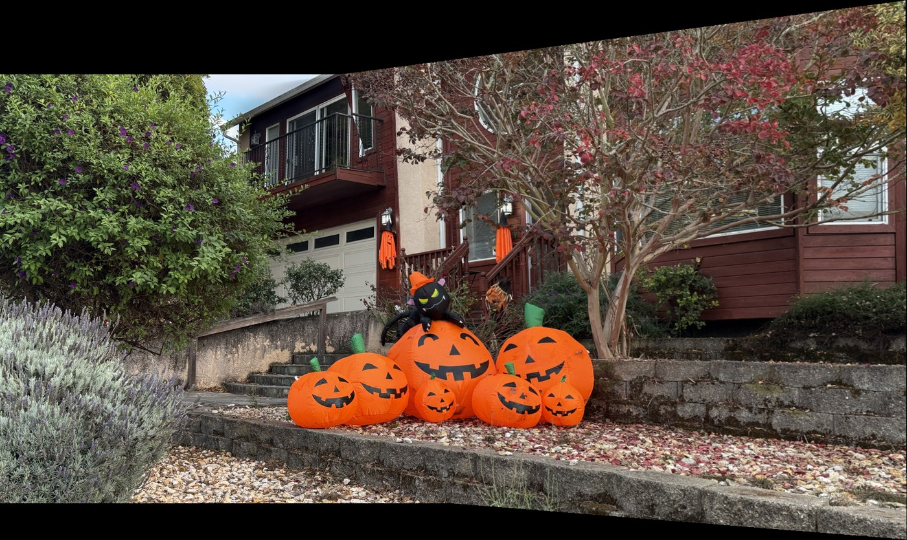
Only two photos here. The pumpkins, stairs and garage line up nicely. The feathered version has a slight double image of the balcony railing at the top left, since the balcony is farther from me than the stairs, so a single homography cannot match both depths perfectly. The two-band version is cleaner at that spot.
A homography is exactly right only for (1) a pure camera rotation or (2) a planar scene. My photos are never a perfect rotation (I am holding a phone in my hands), so objects at very different depths show small errors. It is also very sensitive to point quality: moving one clicked point by a few pixels visibly changes the far end of the mosaic.
A planar mosaic gets stretched a lot at the edges (see the bow-tie tennis result). With a cylindrical projection, every photo is first re-projected onto a cylinder around the camera. After that, a camera pan turns into a simple 2D shift, so I only need a small rigid alignment instead of a full homography.
With focal length f (in pixels) and the image center (x_c, y_c), the cylinder coordinates are θ = atan((x − x_c)/f) and h = (y − y_c)/√((x − x_c)² + f²). In the output image, x′ = f·θ + x_c and y′ = f·h + y_c. I implement it as an inverse warp: for each output pixel, x = f·tan(θ) + x_c and y = f·h/cos(θ) + y_c, and then I sample the source with bilinear interpolation.
The photos have no EXIF, so I do not know f. I let the program choose it: it maps my clicked correspondences onto the cylinder for many values of f and keeps the f for which “cylinder + rotation + translation” fits the points best (the smallest residual).
def cylindrical_warp(im, f):
h, w = im.shape[:2]
xc, yc = (w - 1) / 2, (h - 1) / 2
out_w = int(2 * f * np.arctan(xc / f)) + 1
xs, ys = np.meshgrid(np.arange(out_w), np.arange(h))
theta = (xs - (out_w - 1) / 2) / f
hh = (ys - yc) / f
u = f * np.tan(theta) + xc # inverse mapping: cylinder pixel -> source pixel
v = f * hh / np.cos(theta) + yc
out, valid = sample_bilinear(im, u, v)
return out, valid.astype(np.float64)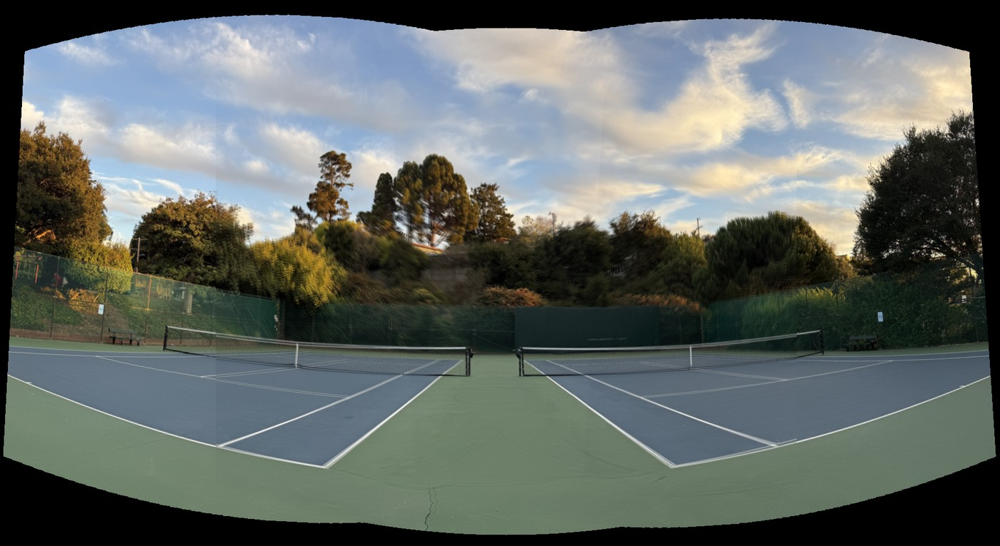
The court lines are no longer stretched into a bow-tie, and the two courts keep a similar size across the picture. The first time I did this I used only a translation and got double nets and dark gray wedges at the top and bottom. There were two causes. First, the empty corners that the cylinder leaves behind were counted as real pixels when blending, so I now give them weight 0. Second, my phone was rolled slightly between shots, which a pure translation cannot fix, so I added a small rotation (a least-squares rigid fit, Procrustes). In my tests this brought the average alignment error of the clicked points down from about 9 px to about 2 px. The feathered version still blurs the distant trees a little (they move in the wind), and the two-band version is sharper. In the two-band picture you can see a small break in the net, where the left and right photos meet.
Solving for a homography is just a linear least squares problem once you multiply out the denominator, and adding more points than the minimum 4 makes it much more stable. The part that took the most time was not the math but choosing good points: spread out, on static objects, and clicked accurately. Inverse warping with bilinear interpolation gives clean results, and the blending method matters a lot: two-band blending removed most of the ghosting that feathering left behind. The most surprising thing was how much a cylindrical projection helps for a wide scene, and how a tiny rotation in the camera (not a pure pan) can ruin a translation-only alignment.